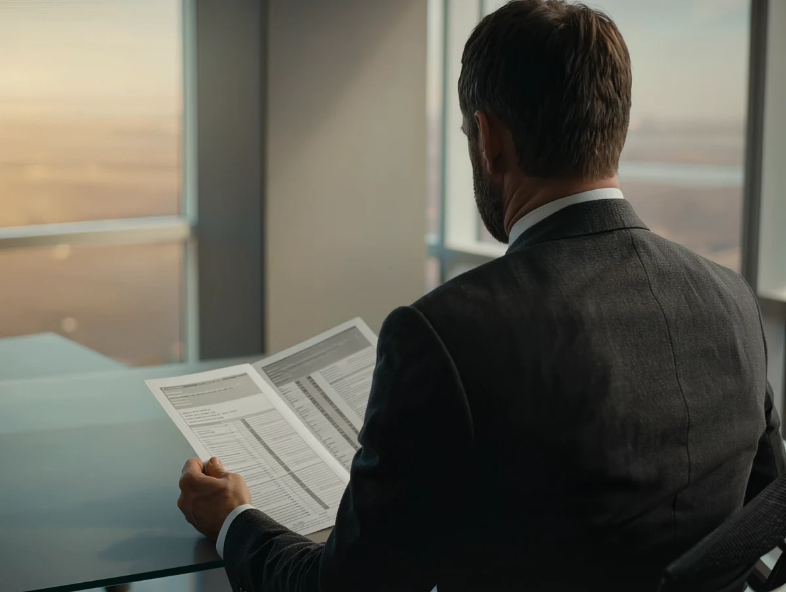
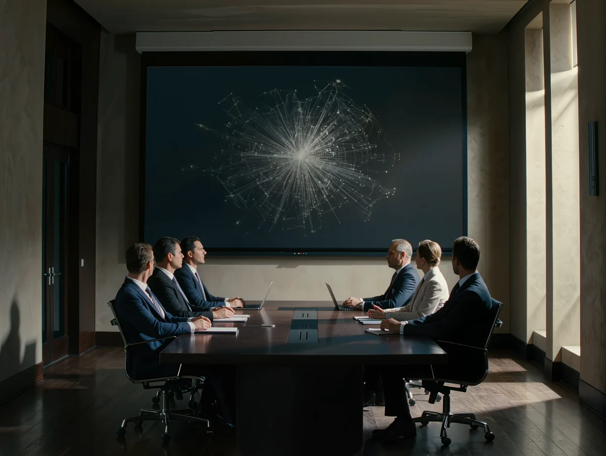
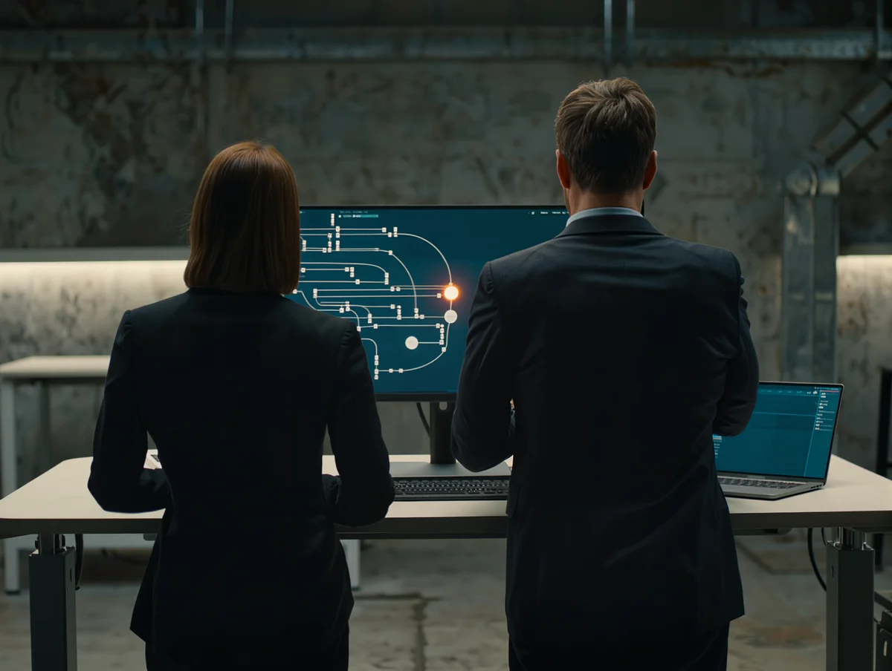

Four working solutions, side by side.

Credit Memo
A committee-ready memo in minutes, every figure read from nCino and traced to its source. The banker signs every section.
Live today
Customer 360
The whole relationship on one working screen: exposure, covenants, early warnings. Every number explains itself.
Live today
Credit Brain
The reasoning core the bank owns. Every decision remembered with its why, compounding deal after deal.
Forward-looking
Delivery Engine
The factory that ships all of it, spec-first with a person at every gate. Not part of the brain: the way it ships.
Not part of the brainAgents draft.
Bankers decide.
Every figure traced to its source and written back where the committee already lives. Nothing is decided by a machine.


Demonstration environment. Working prototypes shown; capabilities, timelines and outcomes are illustrative and subject to change.